Автономное водоснабжение.
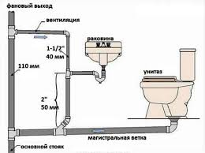
Устройство автономного водоснабжения – дело не слишком дешевое, поэтому по такому пути идут либо при отсутствии централизованного водозабора, либо при ненадежности централизованного источника водоснабжения (воды не хватает не только для полива участка в сухое, жаркое время, но и для бытовых нужд, регулярно происходит выход из строя централизованного водопровода и т. д.), а также если трасса централизованного водопровода проходит слишком далеко от участка и подключение к ней нерентабельно (бывает, что подключение к централизованному водозабору обходится в ту же сумму, что и устройство автономного водоснабжения, а то и дороже – если для прокладки трассы водопровода приходится несколько раз пересекать чужие участки и/или дороги).
Следует заметить, что автономное водоснабжение возможно только в том случае, если на участке имеется вода в пределах доступа и если эта вода соответствует всем санитарно-гигиеническим требованиям и пригодна для использования. В зависимости от ее качества может быть устроено автономное водоснабжение для полного снабжения дома и участка водой (бытовые и хозяйственные нужды, полив огорода и т. д.) или только для полива растений и хозяйственных нужд.
Автономное водоснабжение реализуется с помощью устройства либо колодца, либо скважины.
Будем исходить из того, что вода у вас на участке все же есть (в противном случае и говорить не о чем – вам остаются только бутыли в магазине). И немедленно возникает вопрос: каким же образом обеспечить снабжение вашего загородного дома водой? Что предпочтительнее – колодец или скважина?
Скважина – это тоже колодец, и различие между ними лишь в сечении. Недаром скважины называются трубчатыми колодцами. Дело в том, что дебит воды в колодце не зависит от его сечения, и поэтому и традиционный колодец (шахтный), и трубчатый имеют одинаковый дебит. Но при этом скважины занимают меньшую площадь и кажутся более удобными – насос, с помощью которого вода добывается из скважины, представляется более современным вариантом, нежели «старорежимные» вороты с ведрами или «журавли».
Примечание
Чтобы не было путаницы, здесь мы будем называть шахтные (традиционные) колодцы – колодцами, а трубчатые колодцы – скважинами.
Скважина считается более надежным вариантом, способным обеспечить загородный дом водой в любое время года вне зависимости от внешних факторов. Дело в том, что скважины обычно используют не «верховодку», а второй, а то и третий водоносный горизонт. Однако в ряде случаев бурение скважины нецелесообразно. Например, если дом предназначен для периодических наездов, практически не используется для проживания, не имеет обрабатываемого участка, нуждающегося в регулярном и частом поливе, а грунт неоднородный, с каменистыми включениями, то устройство скважины обойдется неоправданно дорого (обычным инструментом через каменистый слой не пробиться) и гораздо проще соорудить колодец на первый водоносный горизонт и снабдить его системой очистки воды (чтобы воду можно было использовать для питья).
Кроме стоимости сооружения и эксплуатации, у колодца имеется еще один плюс по сравнению со скважиной: скважина требует наличия насоса и в случае отказа оборудования воду из нее не добыть никакими стараниями; а для того, чтобы добыть воду из колодца, достаточно иметь ведро.
Но если уровень залегания воды велик, дом предназначен для проживания (пусть даже и сезонного), вода необходима не только для бытовых нужд, но и для полива участка, то колодцем обойтись сложно – чтобы обеспечить необходимое количество воды, приходится тратить слишком много сил и времени. И в этом случае предпочтение оказывается скважине как более комфортному варианту.
КолодцыВ самой грубой формулировке колодец – это яма, вырытая до водоносного горизонта и постоянно пополняемая водой с него. Для того чтобы яма стала колодцем, ее стены облицовываются различными материалами – деревом, кирпичом, бетоном. Также обустраивается простейший подъемник для ведра с водой – ворот или «журавль». В более комфортном варианте колодец снабжается механическим центробежным насосом (устанавливается прямо в колодце на специальной площадке, расположенной на расстоянии 2–4 м от водяного зеркала). Такой насос подает воду в водонапорный бак, а уже оттуда вода идет по точкам водопотребления в доме. При обустройстве колодца насосом и использовании дома для всесезонного проживания колодец вместе с насосом необходимо утеплить – для этого над колодцем строится утепленная будка.
Колодцы бывают различными. Их разделяют по глубине погружения в водоносный слой, а также по материалам облицовки стен колодезной шахты.
По материалам, из которых изготавливается облицовка стен колодезной шахты, колодцы бывают деревянными, из железобетонных колец, плитнякового камня, полнотелого кирпича.
Случается, что народные умельцы используют и нетрадиционные материалы для облицовки стен колодезной шахты, например старые автомобильные покрышки. С одной стороны, использование подобного материала оправданно: покрышки достаточно легко устанавливаются в шахту, надежно защищают ее от проникновения загрязненных поверхностных вод. Да и обходится такой материал недорого (а у некоторых запасливых людей – так и вовсе даром). Но прежде чем решиться на такую экзотику, следует знать, что автомобильные покрышки содержат много различных химических соединений, вредных для организма человека. И, защищая колодец от загрязнения поверхностными водами, подобная облицовка сама может загрязнять воду, выделяя эти вредные соединения. Такой колодец можно соорудить только в том случае, если вода из него предназначается для хозяйственных нужд, но не для питья или приготовления пищи (кипячение не удаляет из воды такие химические соединения!).
По глубине погружения в водоносный слой (устройство водоприемной части) колодцы бывают:
? несовершенные – в таком колодце дно шахты не достигает водоупорного пласта, а снабжение колодца водой происходит через стенки и/или дно шахты (Рис. 1.2);
? совершенные – в таком колодце дно шахты достигает водоупорного пласта, а снабжение колодца водой происходит только через стенки шахты (Рис. 1.3).
Если снабжение несовершенного колодца водой происходит только через дно шахты (шахта опирается на водоносный слой), то такой колодец называют ключевым. Если шахта несовершенного колодца проникает в водоносный слой и колодец снабжается водой и через стенки, и через дно шахты, то такой колодец называют сборным.
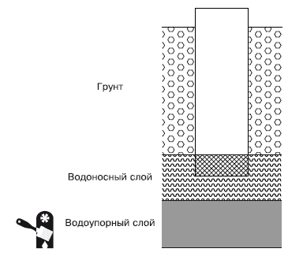
Рис. 1.2.Несовершенный колодец
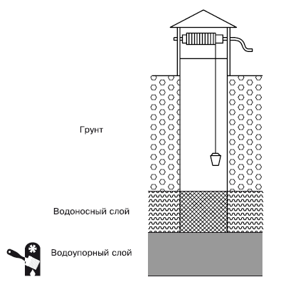
Рис. 1.3.Совершенный колодец
Для того чтобы увеличить запас воды в колодце, можно устроить зумпф(подствольник) – дополнительный резервуар в водоупорном пласте (Рис. 1.4). Через стенки зумпфа вода, естественно, в колодец не поступает, зато увеличивается общий объем резервуара и, соответственно, возрастает запас воды. Особенно актуально это в том случае, если дебит водоисточника не слишком велик и в часы наибольшего водопотребления источник не справляется с должным пополнением колодца водой.
Еще один вариант увеличения запаса воды в колодце – устройство шатра, то есть расширения подводной части колодезной шахты. Обычно если высота водоносного горизонта не превышает 3 м, то для увеличения запаса воды используется зумпф, а если высота водоносного горизонта более 3 м – шатер (Рис. 1.5).
Уровень водяного зеркала в колодце зависит от уровня зеркала водяного горизонта: в случае если водоносный горизонт не имеет подпора (безнапорный), то уровень водяного зеркала в колодце устанавливается на уровне зеркала водоносного горизонта (по закону сообщающихся сосудов), а если имеется подпор воды, то уровень водяного зеркала в колодце поднимается тем выше, чем больше подпор.
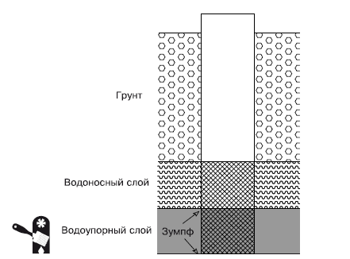
Рис. 1.4.Совершенный колодец с зумпфом
Планируя устройство колодца, необходимо учесть водопотребление вашего загородного дома. Вода – живая субстанция и, как все живое, имеет неприятное свойство приходить со временем в негодность. Попросту говоря, если воду из колодца не вычерпывать практически полностью (должен сохраняться постоянный уровень воды около 1 м), удовлетворяя ежесуточные потребности в воде, то оставшаяся в колодце вода начнет портиться, тухнуть, приобретать неприятный запах, в ней будут размножаться различные болезнетворные бактерии и микроорганизмы. Так что слишком полный воды колодец так же плох, как и недостаток воды – использовать протухшую воду нельзя. Именно поэтому колодцы, предназначенные для индивидуального использования (на одном участке), чаще всего делают несовершенными, при этом шахта заглубляется в водоносный слой не более чем на 1/3 его толщины, а снабжение колодца водой осуществляется через дно.
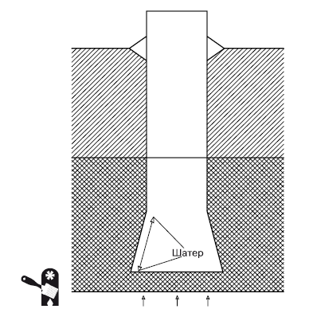
Рис. 1.5.Несовершенный колодец с шатром
Нередки ситуации, когда вода требуется в достаточно большом количестве (то есть необходим довольно большой дебит водоисточника), но нерегулярно (например, если загородный дом используется только в выходные дни). В результате вода в колодце застаивается, а вычерпывать каждый раз застоявшуюся воду – неблагодарный труд. Чтобы предотвратить застаивание воды в колодце, нужно оборудовать колодезную шахту трубой для вентиляции. Обычно для этого используются трубы диаметром 80–200 мм, металлические или пластиковые. Труба устанавливается таким образом, чтобы нижний конец ее отстоял от водяного зеркала на 15–20 см, а верхний конец возвышался над оголовком колодца на 1 м. Чтобы исключить проникновение в колодец насекомых, верхнее отверстие вентиляционной трубы закрывается мелкоячеистой сеткой и над трубой устраивается конусообразное навершие.
Для улучшения качества воды на дно колодца рекомендуется насыпать крупнозернистый песок (толщина песчаного слоя – около 0,2 м), затем слой щебня или гравия (толщина слоя гравия – около 0,25 м), а поверх гравийно-песчаной подушки уложить слой кремня. Кремень препятствует размножению бактерий и микроорганизмов, помогает воде дольше оставаться свежей. Водоносный слой может быть очень жидким, и обильный приток воды в колодец размывает фильтр, снижает его эффективность. В этом случае под креплением шахты устраивается дощатый пол, в котором просверливаются отверстия для притока воды, а песчано-гравийный фильтр располагается на этой опоре.
Из соображений качества воды не следует применять при строительстве колодца старые материалы, которые уже где-то «работали» (например, доски, служившие опалубкой).
Планируя устройство колодца, нужно обязательно учитывать существующие нормативы: расстояние от колодца до здания должно быть не менее 5 м, а от выгребных ям, канализационных труб, компостных куч и т. п. колодец должен располагаться на расстоянии не менее 10–20 м (чем дальше, тем лучше, наиболее предусмотрительные и заботящиеся о здоровье владельцы загородных домов предпочитают расстояние не менее 25 м). И даже если вам удалось оформить документы на источник водоснабжения с нарушениями, то задумайтесь по крайней мере о собственном здоровье и здоровье членов семьи.
Оптимально, если колодец будет располагаться на возвышении, в месте, которое не затопляется во время весеннего таяния снега и сильных дождей, чтобы гарантировать инфильтрацию колодца загрязненной водой с поверхности (Рис. 1.6).
Если вы собрались сооружать колодец самостоятельно, то необходимо принять некоторые меры предосторожности, чтобы в процессе работ не произошло неприятных неожиданностей, чреватых травмами. Если колодец будут сооружать специалисты, то соблюдение техники безопасности должны обеспечить они.
Так, шахта колодца должна быть снабжена ограждением, причем следует учитывать, что поблизости от шахты могут оказаться не только взрослые люди, но и дети и животные. Ограждение должно быть таким, чтобы никто не свалился в колодезную шахту. Для сооружения ограды можно использовать поставленные на ребро доски, которые располагаются на расстоянии 40–70 см от края шахты. Если колодец сооружают приглашенные специалисты, проверьте наличие и качество ограждения – в первую очередь ограждение требуется для вашей безопасности и безопасности вашей семьи.
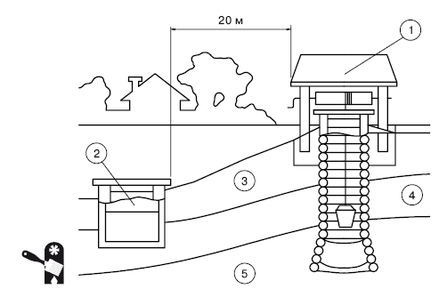
Рис. 1.6.Расположение колодца: 1 – колодец; 2 – выгребная яма; 3 – поверхностный водоносный горизонт («верховодка»); 4 – водоупорный слой глины; 5 – защищенный водоносный горизонт
Площадка поблизости от шахты (2–3 м от устья) должна быть очищена и освобождена от различных тяжелых предметов, которые могут упасть в шахту.
Не используйте в качестве каната для бадьи с грунтом старые веревки: они порваться в самый ответственный момент. Канат должен быть максимально прочным, и его прочность следует проверять ежедневно перед началом работ (подобную проверку нужно производить не только утром, с началом работ, но и после обеденного перерыва) и после их окончания. Если глубина шахты составляет более 6 м, то необходимо использовать два каната – предохранительный канат является дополнительным гарантом безопасности работ.
Если при рытье шахты используется ворот, то он должен иметь вертикальный вал. Вороты с горизонтальным валом могут быть использованы только при рытье неглубоких (до 6 м) шахт. Ворот должен быть снабжен канатным тормозом и зубчатым остановом.
Если при рытье шахты используется механический подъемник, то в приводе допустимо применение только червячных редукторов с эффектом самоторможения. При этом на первичный вал редуктора требуется установить тормоз, чтобы уменьшить инерционный выбег механизма – в качестве еще одной меры предосторожности в дополнение к эффекту самоторможения червячного редуктора. Помните, что предосторожность никогда не бывает лишней!
Если в колодезной шахте работают люди, то их необходимо предупреждать каждый раз, когда в шахту что-либо опускается (не стоит без предупреждения бросать в шахту даже мелкие предметы – маленький камушек или карандаш точно так же могут повредить, например, глаз, как и большой булыжник).
В шахте можно работать только в касках – чтобы исключить травматизм при случайном падении в шахту каких-либо предметов.
Деревянный колодецДеревянные колодцы сейчас строятся довольно редко: все дело в высокой цене на качественную древесину, которая требуется для их сооружения. К тому же далеко не каждая порода дерева подходит для использования: большая часть не выдерживает длительного контакта с водой, быстро гниет или придает воде неприятный привкус. Следует учитывать, что вкус колодезной воды во многом определяется древесиной, из которой изготовлен сруб колодца. Поэтому к выбору древесины – не только по качественным показателям, но и породы – следует подходить очень внимательно и не пытаться сэкономить, приобретая древесину «второй свежести».
Лучшим материалом для изготовления срубов деревянных колодцев считается дуб – его минимальный срок службы как в надводной, так и в подводной части составляет 25 лет, а в подводной части он может прослужить и больше столетия. Для увеличения срока службы колодца используют мореный дуб – для этого древесину сушат (естественная сушка не менее полугода), затем изготавливается и собирается колодезный сруб, все детали сруба маркируются, сруб разбирается, и его части укладываются в проточную воду на два года. Прошедший подобную обработку дубовый сруб – самый надежный и долговечный.
Наравне с дубом для изготовления колодезных срубов используется граб. Еще допустимо использовать для подводной и надводной части колодца вяз, ольху, лиственницу, березу, вербу, но срок службы этой древесины существенно ниже (10–20 лет в подводной части, а березы и вербы и вообще 5–10 лет).
Сосна пользуется популярностью из-за дешевизны и легкости обработки, но подходит только для сооружения надводной части колодца, постоянного контакта с водой эта древесина не выдерживает.
Древесину других пород применять не рекомендуется, особенно для изготовления подводной части колодца: несмотря на то что существуют древесные породы, которые могут так же, как и дуб, долговременно выдерживать без гниения и разрушения контакт с водой, они придают воде неприятный вкус и запах (например, есть удивительно водостойкие и долговечные тропические породы древесины, которые выделяют эфирные масла, и вода приобретает соответствующий аромат, вкус и не слишком полезные свойства, а отечественные осина и пихта придают воде горьковатый привкус). Оптимальный выбор: дуб для подводной части и сосна для надводной – лучшее соотношение «цена/качество».
Не допускается применять для строительства колодцев древесину, имеющую какие-либо пороки. Требования к лесу строги: не сухостойный, здоровый, прямой, отсутствие трухлявости, грибка, червоточин, плесени и других пороков. Применение не слишком качественной древесины для строительства колодцев – это не только сокращение срока их службы, но и отрицательное воздействие на здоровье (не всякую воду можно не только пить, но даже использовать для полива растений, особенно тех, которые употребляются в пищу).
Традиционные деревянные колодцы строятся из целых бревен (диаметром 150–200 мм), но теперь для строительства начали использовать и брус (150 ? 150 мм), и пластины (распущенные вдоль бревна диаметром 200–220 мм) (Рис. 1.7). При сооружении сруба колодца из пластин плоская сторона обращается внутрь колодца (Рис. 1.8).
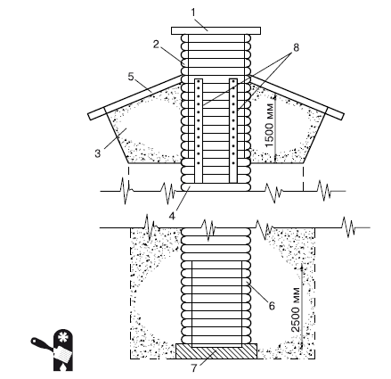
Рис. 1.7.Деревянный колодец с зумпфом: 1 – колодезная крышка; 2 – оголовок; 3 – насыпь под отмостку; 4 – венцы; 5 – отмостка; 6 – водоприемная часть; 7 – зумпф; 8 – вертикальные доски для фиксации венцов
Дерево должно быть тщательно просушено. Когда древесина намокает (что, естественно, и происходит в колодезной шахте), она разбухает и, таким образом, уплотняются пазы и угловые соединения. Если же использовать не абсолютно сухую древесину, а влажную, то нужная степень разбухания не будет достигнута и пазы и угловые соединения останутся неуплотненными. Данное требование очень важно, ведь использовать при сооружении колодезного сруба какие-либо уплотняющие и изоляционные материалы (например, пеньку, которой конопатят пазы при строительстве бревенчатых домов) категорически запрещается – подобные материалы не выдерживают повышенной влажности, в них быстро развивается гниль, а это делает воду в колодце непригодной для использования.
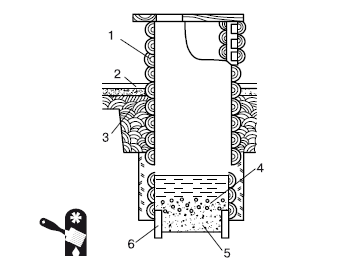
Рис. 1.8.Сруб из деревянных пластин: 1 – колодезный сруб; 2 – отмостка; 3 – глиняный замок; 4 – щебень; 5 – песок; 6 – короб для песчано-гравийного фильтра

Внимание
Ни в коем случае нельзя использовать для сооружения колодезного сруба древесину, прошедшую какую-либо химическую обработку: против возгорания, появления гнили, грибков и т. д. – вода из такого колодца непригодна для использования.
Все поверхности древесины, которые будут обращены внутрь колодца и будут иметь постоянный контакт с водой или находиться в условиях повышенной влажности, должны быть тщательно обработаны до гладкости. Не допускаются сколы, заусенцы, шероховатости, отщепления, другие дефекты – любая неровность поверхности приводит к скапливанию воды и грязи и, как следствие, к ускорению гниения древесины, а также к снижению качества воды.
Обычно деревянные колодцы имеют в сечении квадратную форму – соединение бревен под прямым углом является наиболее прочным и плотным. Чаще всего стороны колодца выбираются длиной 1 м, но бывает, что и больше и меньше – от 70 см до 1,4 м.
Соединение бревен в углах выполняется так же, как при строительстве домов, – «в лапу» либо «в чашу». Соединение «в чашу» применяется редко, так как при этом могут оставаться свободные концы бревен, выходящие за пределы стен. Это соединение используется только в том случае, если колодец сооружается не опускным способом (при опускании колодезного сруба в шахту выступающие концы бревен не только замедляют и затрудняют работу, но и могут привести к развалу сруба).
Следует заметить, что сооружение колодезного сруба из бревен – работа нелегкая, требующая определенного (и немалого) мастерства и навыков. Небольшая ошибка в том же соединении бревен – и окажется, что вся работа была напрасной, а колодец непригоден для использования из-за просачивания грунтовых вод. Проще изготавливать сруб не из бревен, а из пластин или брусьев, также можно применять толстые доски. Угловые соединения сруба из пластин, брусьев или досок выполняются так же, как и в срубе из бревен (Рис. 1.9).
Первая сборка сруба осуществляется на поверхности, при этом каждый его венец маркируется для последующего монтажа в подготовленной шахте.
Самый простой вариант – это если колодец неглубок (до 6 м) и шахта может быть сразу отрыта на нужную глубину. В этом случае подготовленный сруб просто монтируется в готовом котловане – так называемое возведение сруба со дна колодезной шахты. При этом пазы между венцами сруба должны быть заполнены жирной глиной – это предотвращает просачивание воды. Чаще всего сруб таким образом возводится на раме-основании, которая укрепляется на дне шахты. Возможен также вариант с монтажом пола: сначала на дне шахты размещаются лежни (распиленные вдоль бревна), которые служат основанием пола, а затем монтируется сруб.
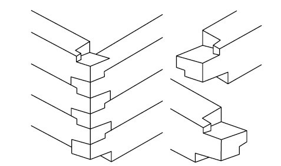
а
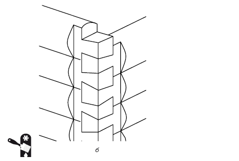
б
Рис. 1.9.Варианты соединения углов сруба: а – соединение в простую «лапу»; б – соединение в косую «лапу»
Гораздо сложнее, если сруб нужно опускать в шахту и при этом котлован под ним приходится углублять – это опускное крепление с наращиванием сруба сверху по мере погружения. Такая работа тяжелая и непростая, требующая участия минимум двоих человек – один работает на поверхности, а второй в котловане (а когда котлован подходит к водоносному горизонту и приходится поднимать мокрый тяжелый грунт, то и больше).
Хорошо, если колодец относительно неглубок, а грунт плотный – в этом случае можно осуществлять опускное крепление с наращиванием сруба сверху, опуская его на веревках. Над шахтой устанавливается рама из бревен, сруб подвешивается к раме в шахте на небольшой высоте от дна (от 0,5 до 1 м), при этом веревки подводятся серединой под углы сруба, а затем закрепляются на бревнах рамы несколькими витками (не менее 5 штук), грунт выбирается из-под него, а при ослаблении веревок сруб постепенно опускается в шахту. В процессе опускания необходимо производить проверку вертикальности: поскольку между срубом и стенками шахты имеется зазор, то можно перемещать сруб, наклонять его, чтобы соблюсти строгую вертикальность в его размещении в колодезной шахте (Рис. 1.10).
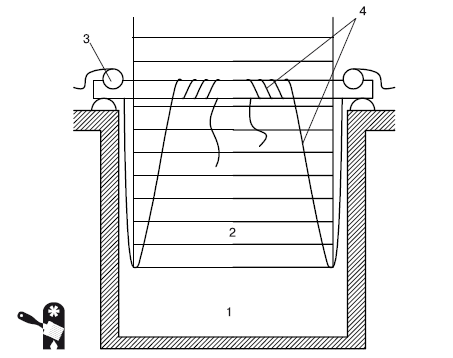
Рис. 1.10.Опускание сруба в шахту колодца на веревках: 1 – шахта колодца; 2 – рама из бревен; 3 – сруб; 4 – веревки
Если же колодец глубок, то работы усложняются. В этом случае нельзя применять опускание сруба на веревках. Сначала шахта углубляется в грунт на 3–4 м, дно ее выравнивается (выравнивание должно быть абсолютно строгим, в противном случае колодезный сруб окажется перекошенным) и на нем начинается монтаж сруба. Сруб монтируется до тех пор, пока не достигнет высоты 0,5 м выше уровня грунта (для бревенчатого сруба это три венца). При наращивании сруба венцы скрепляются между собой досками, которые удаляются после того, как сруб готов, – доски служат временным креплением, предотвращающим отрыв венцов друг от друга по мере наращивания сруба. Затем подрывается грунт в середине каждой стены (глубина – около 0,2–0,3 м) и стены подклиниваются. Только после этого производится выемка грунта в углах сруба.
Для облегчения выемки грунта из глубокой шахты можно установить специальную опору с лебедкой. При этом один человек работает в шахте, загружая грунт в тару (в ведро или бочку), а второй (или двое – в зависимости от веса поднимаемого на поверхность грунта) работает наверху (Рис. 1.11).
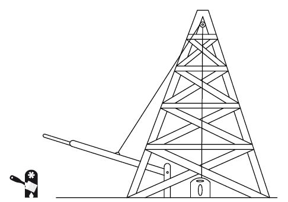
Рис. 1.11.Опорная вышка для подъема грунта из глубокой шахты
После того как грунт извлечен, клинья, подпирающие стены сруба, убираются и сруб равномерно осаживается на отрытую глубину, равномерность осаживания контролируется с помощью отвеса. Для того чтобы облегчить осаживание сруба в шахту, его дно можно снабдить башмаком с режущим стальным ножом (Рис. 1.12).
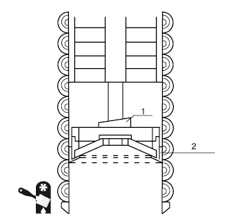
Рис. 1.12.Башмак в нижней части сруба: 1 – клин; 2 – башмак
Чтобы гарантировать строго вертикальный ход сруба в колодезной шахте, можно применять специальные направляющие (Рис. 1.13). Угловые направляющие изготавливаются из толстых досок и крепятся гвоздями к каждому венцу сруба. Посередине каждой стороны сруба устанавливаются дополнительные средние направляющие, также изготовленные из толстых досок и прикрепленные гвоздями к каждому венцу сруба. Средние направляющие придают всей конструкции дополнительную жесткость, что позволяет сохранять строгую вертикальность при опускании сруба. После того как все направляющие установлены, к ним вплотную укладываются толстые бревна, а в углы вбиваются длинные колья. Подобная конструкция гарантирует, что сруб будет идти в шахту без перекосов.
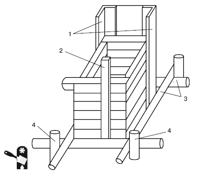
Рис. 1.13.Направляющие для гарантии вертикального осаживания сруба в колодезной шахте: 1 – угловые направляющие; 2 – дополнительная средняя направляющая; 3 – бревна; 4 – колья

Примечание
Конструкция направляющих после завершения работ из шахты не извлекается, а остается в грунте.
При рыхлом и сыпучем грунте могут возникать проблемы при осаживании сруба колодца в шахту – он застревает. В этом случае приходится ударять по верхнему венцу, чтобы миновать проблемное место. Это не всегда помогает, и, чтобы продолжить осаживание сруба, приходится сооружать на верхнем венце платформу для груза. Масса груза может составлять несколько тонн, и под таким весом сруб оседает. Но бывает, что и такое давление не дает результата, и тогда сооружение колодца выполняется самым сложным и непроизводительным способом – наращиванием сруба снизу. При этом в стенках шахты необходимо устраивать углубления для закладывания концов бревен (эти углубления называются «закладами» или «печурами»), выступающих за габариты сруба на 50–70 мм, – для наращивания сруба снизу через каждые 4–5 венцов делается венец, имеющий такие выступающие бревна («пальцы»). «Пальцы» поджимаются в углублениях домкратами и подклиниваются. Подобный способ применим только в том случае, если грунт достаточно плотный. В рыхлых грунтах и плывунах наращивание сруба снизу невозможно, так как нельзя надежно закрепить «пальцы» в грунте. Поэтому прежде чем браться за строительство деревянного колодца, необходимо определить, с каким грунтом придется иметь дело, и, исходя из этого, выбирать способ монтажа сруба в шахте колодца.
После того как закончены работы в шахте, сруб наращивается над поверхностью земли на 0,6–0,8 м. Эта надземная конструкция называется оголовком колодца (Рис. 1.14). Оптимально, если он снабжен крышкой или навесом, чтобы исключить попадание в колодец мусора.
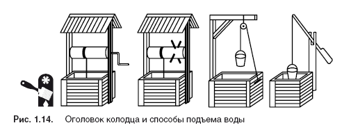
Рис. 1.14.Оголовок колодца и способы подъема воды

Внимание
Если вода в колодце предназначена для питья, то крышка обязательна!
Вокруг оголовка сооружается отмостка. Ее строительство рекомендуется начинать не ранее чем через два года после завершения строительства колодца – из-за возможной усадки грунта. После того как грунт осядет, по периметру оголовка устраивается глиняный замок глубиной 1–1,5 м и шириной около 0,5 м, а поверх замка строится отмостка. Проще всего и надежнее соорудить отмостку из железобетона.
Готовый шахтный колодец из дерева выглядит таким образом (Рис. 1.15).
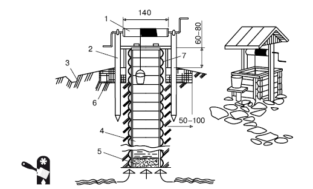
Рис. 1.15.Деревянный шахтный колодец: 1 – ворот; 2 – спайка; 3 – водоотводная труба; 4 – сруб; 5 – гравийная подушка; 6 – глиняный замок; 7 – обшивка оголовка колодца (выполняется из досок)
Бетонный колодецОсновной недостаток деревянных колодцев – сложность их строительства. Поэтому теперь их строят редко. Гораздо чаще сооружаются бетонные колодцы. Срок их службы – около 25 лет, а стоимость существенно ниже стоимости деревянных. К тому же бетонные колодцы гораздо проще строить. Бетонный колодец может быть выполнен из железобетонных колец, построен с помощью монолитного литья или сооружен из бетонных пластин.
Наиболее распространенный вариант – колодцы из железобетонных колец. Такие колодцы очень просто монтируются (особенно по сравнению с деревянными), и даже над материалом не нужно особенно задумываться: бетонные кольца приобретаются готовыми. Колодец из железобетонных колец можно построить буквально за несколько дней, а при легком грунте и наличии опыта в строительстве колодцев – даже за один день.
Чаще всего для железобетонных колодцев используются кольца типа КС 10-9 (высота – 900 мм, внутренний диаметр – 1000 мм, внешний диаметр – 1160 мм, вес – 700–750 кг). Возможно использование колец и других размеров: с высотой 400–900 мм (легче устанавливать кольца с меньшей высотой), внутренним диаметром 1000–1200 мм аналогичного типа. Кольца выбираются в зависимости от запланированного размера колодца и личных предпочтений (кто-то предпочитает железобетонные кольца, а кто-то просто бетонные – у этих колец разная толщина (50–90 мм и 80–120 мм соответственно) (Рис. 1.16).
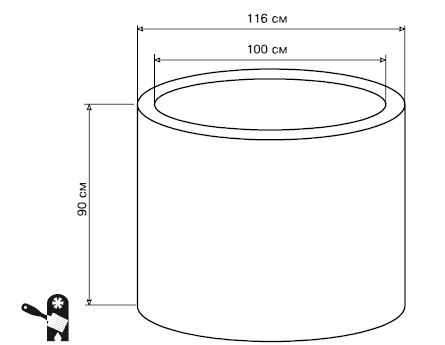
Рис. 1.16.Стандартное железобетонное кольцо типа КС 10-9 ГОСТ 8020-90
Бетонные и железобетонные кольца изготавливаются в двух вариантах: с замками (такие кольца парные: на одном выемка, а на втором бортик, соответствующий по размерам выемке первого кольца) и без них, с гладкими плоскими торцами. Рекомендуется для сооружения колодцев использовать кольца с замками – таким образом минимизируются подвижки колец относительно друг друга в водонасыщенных «плавающих» грунтах, в то время как обычные гладкие кольца могут быть просто выломаны из конструкции. Для фиксации плоских колец в конструкции колодезной шахты необходимо использовать стальные скобы. Толщина скоб – около 5 мм, ширина – от 50 до 80 мм. Форма скоб может быть различной (Рис. 1.17).
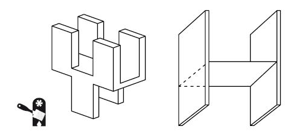
Рис. 1.17.Стальные скобы для фиксации плоских колец
Укладка бетонных колец в шахту напоминает сооружение деревянного колодца – применяется аналогичный опускной метод, то есть шахта постепенно углубляется, а на ее дно по мере ее углубления опускаются новые кольца. Такой метод сооружения колодца из бетонных колец называется закрытым. При этом сначала котлован роется на глубину около 2 м, затем в него опускаются два кольца (для установки колец в котловане используется лебедка или мощный ворот, с помощью которого можно манипулировать довольно солидной массой колец). При отсутствии подъемного механизма, с помощью которого можно опускать кольца в шахту, кольца просто сбрасываются в нее. При этом необходимо подкладывать на первое кольцо (на которое требуется установить следующее) доски (толщина 20–25 мм), которые служат амортизатором и не допускают появления трещин в бетоне. Сброшенное кольцо обычно не становится точно на место, и его нужно поправить ломиком. После установки второго кольца доски-амортизаторы удаляются. Остальные кольца накатываются на нужное место. Рекомендуется устанавливать последующее кольцо тогда, когда предыдущее немного выступает над уровнем земли (до 10 см) – так удобнее.
Затем, после установки очередного кольца, если грунт мягкий, изымается грунт внутри колец и по мере углубления шахты устанавливаются новые кольца. Если колодец строится в плотном тяжелом грунте, то сначала изымается грунт под кольцом, а затем, после осадки колец в шахту, изымается грунт внутри колец.
Нижнее кольцо можно снабдить башмаком с ножом – подобно тому как снабжается башмаком с режущим ножом нижняя секция деревянного колодца. Это облегчает опускание колец в шахту (Рис. 1.18).
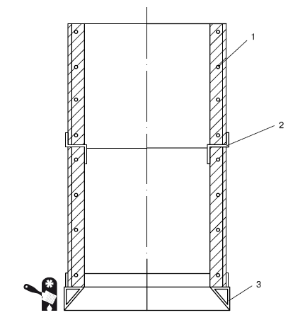
Рис. 1.18.Устройство бетонного колодца: 1 – арматура; 2 – скоба; 3 – башмак
Швы между кольцами необходимо герметизировать сразу же после установки колец, так как затем, по мере проходки шахты колодца, внутрь начнет просачиваться вода и в таких условиях практически невозможно положить цементный раствор.

Примечание
Для герметизации швов бетонного колодца рекомендуется цементный раствор 1:3, при этом следует использовать портландцемент марки не ниже 400, а песок – кварцевый, промытый, не имеющий посторонних примесей – использование некачественных компонентов негативно скажется на качестве колодезной воды. Некоторые умельцы используют для герметизации монтажную пену – она очень удобна (всего-то и требуется, что брызнуть в нужное место из баллончика), но вода в таких колодцах не является питьевой: монтажная пена отнюдь не экологически чистый продукт. Не стоит использовать для уплотнения швов просмоленную пеньковую веревку – она может разрушаться во влажной среде и частицы попадают в воду. Если же уплотнение швов необходимо, то лучше использовать резиновый жгут.
Герметизация должна быть надежной, так как в противном случае через щели может просачиваться загрязненная вода верхнего слоя («верховодка») и вода в колодце станет непригодной для питья.
Рыхлые водоносные пласты требуют устройства фильтра, чтобы частицы грунта не попадали в воду. Фильтр устраивается так, как было описано выше: под креплением шахты строится дощатый пол с отверстиями для притока воды, на него насыпается крупнозернистый песок, затем слой щебня или гравия. Для улучшения качества и вкуса воды можно уложить поверх гравийно-песчаной подушки слой кремня.
Бывает, что шахта колодца идет под уклоном – особенно часто такое случается при первом опыте устройства колодца (по неопытности вовремя не проверили вертикальность шахты отвесом, положились на прикидку «на глазок», установили кольца под углом и т. д.). Если планируется снабдить колодец насосом для подъема воды, то можно оставить шахту как есть, но если вода будет подниматься вручную (ведро на веревке), то придется выровнять шахту, придав ей вертикальность, иначе пользоваться колодцем будет неудобно. Поскольку для нормальной жизни в загородном доме вода нужна постоянно, то удобство пользования колодцем – дело весьма немаловажное.
Для выравнивания шахты колодца нужно выбрать грунт с наружной стороны колонны. Причем грунт придется выбирать не просто на ширину, необходимую для придания колонне колодца вертикальности, но так, чтобы в шахте можно было работать (Рис. 1.19, 1.20). Копать придется много – исправление ошибок всегда ведет к большим трудозатратам. При этом необходима страховка человека, работающего в шахте, – колонна колодца может наклониться и придавить копателя, за этим нужно внимательно следить наверху, чтобы предотвратить несчастный случай.
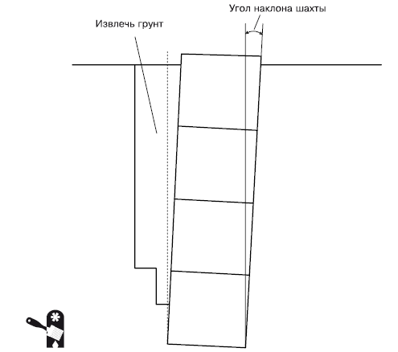
Рис. 1.19.Выравнивание шахты бетонного колодца
После того как колонна колодца установлена на место, свободные места шахты заполняются грунтом.
Даже в том случае, если вы планировали свой колодец, исходя из результатов обследования местности, и точно знаете, на какой глубине залегает водоносный горизонт, в процессе проходки шахты следите за температурой и просачиванием воды: при приближении к водоносному горизонту температура падает на 1–2?°C и через стенки шахты начинает просачиваться вода. Как только это произошло, дальнейшая проходка шахты продолжается до тех пор, пока в колодце не наберется нужный объем воды. Тогда устанавливается последнее кольцо, которое не заглубляется, а служит оголовком колодца.
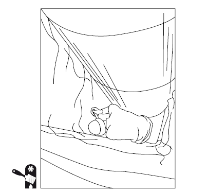
Рис. 1.20.Работа по выравниванию шахты бетонного колодца
Глиняный замок и отмостка строятся так же, как и в случае деревянного колодца: после того как полностью осядет грунт вокруг него.
Колодец необходимо снабдить крышкой и желательно – навесом (Рис. 1.21).
Возможно сооружение колодца и открытымспособом (накопительным). Он применяется в сухих непучинистых грунтах, не подверженных сезонным подвижкам. При открытом способе в грунте формируется котлован, в который устанавливают бетонные кольца. Снаружи колодезная шахта обсыпается песком, изготавливается отмостка – колодец готов. Гарантии качества воды в таком колодце нет – высока вероятность просачивания грунтовых вод, дренированных поверхностными отходами. Чтобы получить чистую воду, пригодную не только для хозяйственных нужд, но и для питья, применяют закрытый способ строительства бетонного колодца.
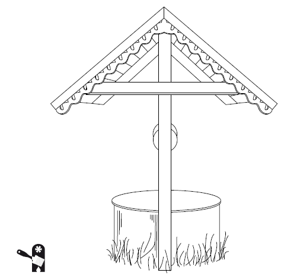
Рис. 1.21.Бетонный колодец с навесом
Менее распространен вариант строительства бетонного колодца с помощью монолитного литья. Обычно его используют, если глубина колодца невелика. При большой глубине колодезной шахты такой способ занимает много времени.
Если шахта колодца имеет небольшую глубину, то для создания колодца с помощью монолитного литья сначала полностью отрывается шахта, затем в ней устанавливается опалубка (внутренняя и наружная) и заливается бетон. Способ достаточно простой и надежный. Если же шахта должна быть глубокой, то применяется опускной способ строительства колодца: шахта отрывается на небольшую глубину, устанавливаются внутренняя и наружная опалубки, проводится бетонирование, затем опалубки выводятся на поверхность – над уровнем грунта, а шахта колодца углубляется (так же, как и в случае сооружения колодца из бетонных колец), по мере углубления шахты производится заливка бетона. При этом нижнюю часть бетонного ствола обычно оснащают башмаком со стальным режущим ножом – для облегчения проходки грунта. При таком способе секции колодца отливаются постепенно (фактически это производство бетонных колец прямо на месте, в шахте колодца), и после каждой отливки приходится ждать, пока очередная отлитая секция не застынет полностью, а это около 10 дней. Такое строительство колодца – дело довольно долгое, ведь после каждой отливки приходится ждать полторы недели и только затем возобновлять работы.
Колодец из бетонных пластинстроится так же, как и деревянный. Пластины монтируются на раствор, а по углам соединяются сваркой. Такой способ строительства бетонного колодца применяется реже всего.
Кирпичные и каменные колодцыСтроительство колодцев из кирпича и камня лучше доверять специалистам – в этом случае нужно иметь опыт кладки.
Каменные и кирпичные колодцы строятся преимущественно круглыми. Кирпич применяется только полнотелый красный (ГОСТ 530-80) пластического прессования, причем он должен быть высокого качества, без пережогов и недожогов, обладать хорошей плотностью (свыше 1600 кг/м ), без пустот, сколов, внутренних трещин. Марка кирпича по прочности не ниже М-100, по морозоустойчивости не ниже F-35. Каменные колодцы выполняются из песчаника и плотного известняка, реже – из сланца. Перед кладкой камни нуждаются в подготовке: их необходимо обтесывать для получения плоских сторон. Можно приобрести уже подготовленный бут с плоскими сторонами, но стоит он значительно дороже.
Перед началом кладки бутовый камень сортируется, так как в одном слое кладки должны быть камни примерно одинакового размера. Камни укладываются узкой стороной внутрь, в противном случае они могут быть вытолкнуты из кладки давлением грунта, особенно если грунт пучинистый. С внешней стороны каменная кладка заполняется щебнем, а кирпичная – битым кирпичом.
Для повышения прочности кладки применяется армирование с помощью стержней из арматурной стали диаметром 15–20 мм.
Кладка кирпича при круглом сечении колодца выполняется в 1,5 или 2 кирпича тычковыми рядами. Обвязка кладки осуществляется за счет смещения кирпичей в смежных рядах на 1/4 кирпича (Рис. 1.22).
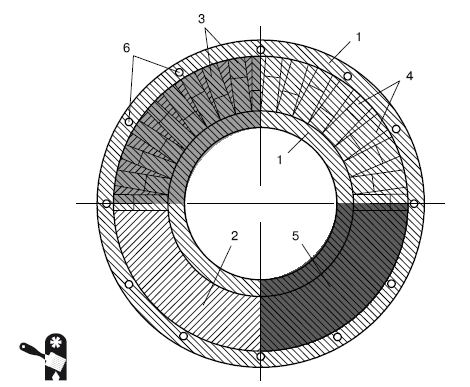
Рис. 1.22.Схема кладки в 1,5 кирпича кирпичного колодца круглого сечения: 1 – бетонная подушка; 2 – цементный раствор под кладку; 3 – первый ряд кладки; 4 – второй ряд кладки; 5 – третий ряд кладки; 6 – арматурный каркас
Кроме того, возможно применение кладки из тычков и ложков (Рис. 1.23).
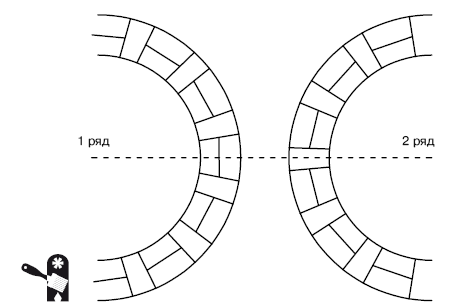
Рис. 1.23.Кирпичная кладка из тычков и ложков
Изнутри колодезный ствол штукатурится, а подводная часть покрывается раствором цемента и песка (соотношение 1:2).
Минимальная толщина стенок кирпичного колодца – 25 см, каменного – 35 см.
Если вода близко и шахта колодца является неглубокой, то кладка ведется от дна шахты. Если же шахта колодца глубока, то кладка ведется опускным методом – устанавливается опорный башмак и на нем осуществляется кладка (подобно тому как опускным методом строится колодец из бетонных колец, только в этом случае каждое кольцо изготавливается на башмаке, а не устанавливается на него готовым).
Колодцы из кирпича и камня являются тяжелыми, и для них требуется установка фундамента. Фундамент изготавливается из бетона. Сначала устраивается щебеночное основание, которое втрамбовывается в грунт, затем на нем собирается и закрепляется опалубка. Щебенка заливается цементным раствором без песка (Рис. 1.24).
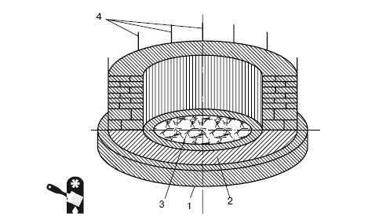
Рис. 1.24.Фундамент для кирпичного или каменного колодца: 1 – бетонная подушка; 2 – цементный раствор под кирпичную или каменную кладку; 3 – фильтрующая засыпка; 4 – арматурный каркас
Очистка и дезинфекция колодцаЛюбой колодец периодически нуждается в чистке и дезинфекции. Дезинфекция проводится не только в старых, поработавших колодцах, но и в новых – до начала эксплуатации. Чистить тоже нужно не только старые колодцы, но и свежепостроенные – ведь в них попадает различный строительный мусор и грязь с поверхности. Эксплуатирующийся колодец, вода которого предназначена для питья, закрывается крышкой, но ведь в процессе строительства крышки еще нет, и поэтому колодец необходимо очистить до начала эксплуатации. Сначала производится чистка колодезной шахты, а затем – дезинфекция. Для уже эксплуатирующихся колодцев: сначала осмотр, ремонт и чистка колодезной шахты, а затем – дезинфекция. Если же ограничиться только дезинфекцией, то качество воды в колодце может быть далеко от желаемого.

Внимание
При чистке и дезинфекции уже эксплуатирующегося колодца требуется не только очистить стены колодезной шахты, но и заменить песчано-гравийную подушку, если таковая имеется. При этом можно ограничиться извлечением подушки и тщательной промывкой всех материалов (песка, гравия), а затем установкой подушки на место, но проще и надежнее полностью заменить подушку новой.
Чистка и дезинфекция эксплуатирующихся колодцев выполняется регулярно, но определенных сроков, когда следует проводить такие мероприятия, не существует. Все делается по мере надобности. Есть несколько признаков, по которым можно понять, что колодец необходимо почистить и продезинфицировать:
? только что построенное сооружение перед началом эксплуатации;
? снижение уровня воды в колодезной шахте (подобное может быть связано со снижением уровня грунтовых вод);
? помутнение воды, появление взвесей (возможно, неэффективен колодезный фильтр или произошла разгерметизация швов колодезной шахты и происходит инфильтрация колодца поверхностными водами);
? застой, затхлость воды (подобное происходит, если колодцем долго не пользовались, откачка воды со сменой ее свежей не происходила);
? неприятный запах и вкус воды (может быть связано с попаданием в колодец канализационных стоков – если колодец построен с нарушениями нормативов, поблизости от выгребной ямы и т. д., а также может случиться во время сильных весенних паводков);
? попадание в колодец животных или мусора (нередко случается, если забывают закрыть крышку колодца).
Для чистки стенок шахты колодца используют веники из березовых прутьев и/или металлические щетки. Очищать стенки нужно как можно более тщательно, удаляя с них скопившуюся слизь, ил, различные осадки.
При обычной эксплуатации, если не забывать закрывать крышку колодца, вовремя откачивать воду и следить, чтобы в колодец не попадали посторонние предметы, чистка и дезинфекция требуются раз в два-три года. Однако желательно раз в год делать анализ колодезной воды – чтобы гарантировать ее качество, безопасность для здоровья. Следует учитывать, что далеко не всегда можно заметить некачественность воды по внешним признакам: внешне вполне хорошая, чистая вода, не обладающая ни неприятным вкусом, ни запахом, может оказаться непригодной для питья (табл. 1.4).
Таблица 1.4. Показатели качества питьевой воды [5]
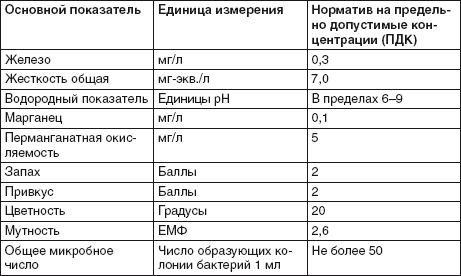
При чистке колодца следует учитывать возможность образования в шахте вредных газов. Особенно это касается глубоких колодцев. Проверку колодезной шахты на наличие вредных газов производят с помощью газоанализатора. Но прибор не у каждого есть под рукой, и можно обойтись подручными средствами. Старинный надежный способ проверки того, есть ли в колодце газы, – спустить в шахту горящую свечу. Если свеча погасла – газы есть (такие газы вытесняют кислород, а без кислорода горение невозможно). В этом случае шахту необходимо предварительно очистить от газов, и только затем возможен спуск в колодец человека для выполнения работ.
Чаще всего для очистки шахты колодца от газа пользуются вымахиванием. Этот метод хорош тем, что не требует никакого оборудования, приборов и специальной подготовки. Достаточно иметь связку соломы или травы, которую опускают на веревке в шахту. Такая связка должна практически полностью перекрывать шахту колодца, но так, чтобы имелась возможность ее быстро опускать и поднимать. Несколько частых спусков и подъемов связки – и шахта очищается. Для окончательной очистки нужно опустить в колодец связку горящей соломы – таким образом выжигаются остатки газа. Затем опять следует проверить шахту свечой, и только в том случае, если она не гаснет, в шахту может спускаться человек для работы. Если свеча гаснет или неожиданно вспыхивает, то нужно повторить очистку еще раз, пока из шахты полностью не удалятся все вредные газы.
Можно откачать воздух из колодца(вместе с вредными газами), используя мощный пылесос или вытяжной вентилятор. После откачивания воздуха производится проверка шахты с помощью свечи.
Вытяжка газа может быть осуществлена с помощью печки-буржуйки. Этот способ считается одним из самых надежных и применяется с давних пор (Рис. 1.25). Печка устанавливается на поверхности, нижний конец трубы, присоединенной к поддувалу, опускается в колодезную шахту. При топке печки возникает тяга, которая и выводит из колодца вредные газы. Вместо буржуйки можно использовать металлическую бочку, присоединив к ней трубу для вентиляции. Случается, что газы просачиваются в колодезную шахту постоянно, и у работающего в ней человека начинаются головные боли, слезятся глаза и т. д. Если подобное происходит, то работать в шахте можно только при функционирующей системе удаления газов, то есть при работающей печи.

Внимание
Перед спуском в шахту человека следует тщательно проверить подъемный механизм, испытать веревку на прочность с трехкратной перегрузкой. Человек должен обвязаться веревкой у пояса и под мышками, чтобы его могли поднять в случае экстренной ситуации.
Самый простой и эффективный способ дезинфекции – с помощью хлорированной воды. Для этого нужно приготовить 3 %-ный раствор: 300 г хлорной извести заливается небольшим количеством холодной воды и тщательно растирается так, чтобы образовалась жидкая кашица без комков (смесь должна быть однородной), затем полученная кашица вливается в 10 л воды и отстаивается до разделения на прозрачную фракцию и осадок. Для дезинфекции используется прозрачная фракция (аккуратно сливается, чтобы не примешать осадок).
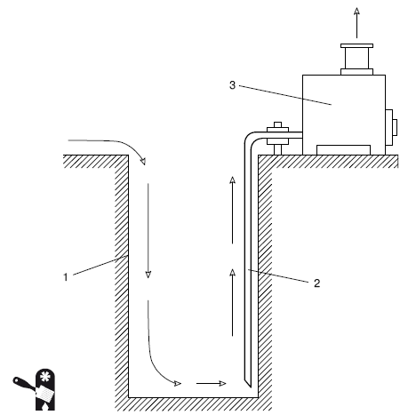
Рис. 1.25.Удаление из колодца вредных газов с помощью печки: 1 – колодезная шахта; 2 – вентиляционная труба; 3 – печка
Внимание
При приготовлении раствора обратите внимание на хлорную известь. Наличие этикетки еще не означает, что вещество хорошего качества. При неправильном и/или длительном хранении хлорная известь может впитать влагу из воздуха, в этом случае дезинфицирующие свойства утрачиваются. При впитывании влаги хлорная известь теряет характерный запах хлора и приобретает вид кашицы. Качественная хлорная известь пахнет хлором и имеет вид порошка (этот порошок должен быть сухим!).
Норма расхода раствора для дезинфекции: на 1 м воды требуется 1 ведро раствора. Для определения объема воды в колодце используем элементарную математику: объем определяется как произведение глубины воды на площадь водяного зеркала:
V= S? h,
где V– объем воды в колодце; S– площадь водяного зеркала; h– глубина воды в колодце.
Для измерения глубины воды в колодце используется сухой шест: его следует опустить в колодец, тщательно соблюдая вертикальность. Затем шест извлекается. Длина влажной части и будет глубиной воды в колодце.
Если колодец имеет квадратное или прямоугольное сечение, то площадь водяного зеркала представляет собой произведение длин двух сторон (для квадратного сечения – длина одной стороны в квадрате). Если колодец круглый, то площадь водяного зеркала рассчитывается как площадь круга:
S= ? R ,
где S– площадь водяного зеркала; R– радиус колодца; ? – константа (для упрощения расчетов принимается равной 3,14).

Внимание
Производя расчеты, не забывайте о размерности: результат у вас получится в кубических метрах, а не в литрах. Если вы хотите знать, сколько литров воды содержится в вашем колодце, то нужно перевести кубические метры в литры: 1 м = 1000 л.
Раствор для дезинфекции заливается в колодец опрыскивателем так, чтобы были обработаны и стены, затем колодец оставляется открытым на 24 ч. Когда дезинфицирующий раствор будет влит в воду, необходимо перемешивать ее в течение 10–15 мин. После того как вода с дезинфицирующим раствором тщательно перемешана, ее нужно отстаивать около 12 ч. При этом колодец нужно не только накрыть крышкой, но еще и закрыть плотной тканью (желательно брезентом), так как хлор очень летуч. Если колодец оснащен вентиляционной трубой, ее необходимо заблокировать (пробкой или плотно закрепленным на выходном отверстии брезентом).
После дезинфекции воду из колодца необходимо откачивать, пока не пропадет хлорный привкус и запах. Стенки колодезной шахты нужно промыть чистой водой. В течение недели после дезинфекции колодца воду для питья нужно кипятить.
При работе по дезинфекции колодца запах хлора может вызывать головокружение, головные боли, вплоть до потери сознания (в случае индивидуальной непереносимости). Чтобы предотвратить подобное негативное воздействие на организм, при работе с хлорсодержащими препаратами следует использовать респиратор или противогаз.
Иногда для дезинфекции воды используется раствор марганцовки (примерно 1 чайная ложка на каждый метр высоты воды в колодце). Нужное количество марганцовки растворяется в ведре воды, затем раствор выливается в колодец. После дезинфекции с помощью марганцовки так же, как и после хлорирования, необходимо откачать воду.

Внимание
При дезинфекции колодца должен присутствовать медицинский работник, а пробы воды после окончания дезинфекции следует сдать для проведения анализов. Только в том случае, если анализы покажут полное соответствие воды в колодце действующим нормам и правилам, колодцем можно пользоваться.
Если в населенном пункте отмечены случаи кишечных инфекционных заболеваний, рекомендуется хлорировать водув колодце ежедневно до прекращения вспышки болезни.

Внимание
Хлорирование воды и дезинфекция – разные вещи! При хлорировании не требуется предварительная очистка колодца с заменой песчано-гравийной подушки.
Для этого используются меньшие дозы раствора хлорной извести, чем при общем хлорировании колодца для обеззараживания. Кроме того, используется не 3 %-ный, а 1 %-ный раствор хлорной извести. Необходимое количество раствора определяется опытным путем. Для этого вода из колодца наливается в 3 стакана и в каждый стакан добавляется разное количество раствора хлорной извести: 2, 4 и 6 капель раствора (раствор вносится в стакан пипеткой). Затем вода перемешивается, стаканы закрываются крышками и раствор отстаивается. Летом время отстаивания раствора составляет полчаса, зимой – 2 ч. Необходимая доза хлорной извести содержится в том стакане, где вода приобретает запах хлора, а добавление раствора было минимальным. Иначе говоря, если хлором пахнет вода в стаканах, в которые добавлялось 4 и 6 капель раствора хлорной извести, то необходимая доза – 4 капли на 200 мл (количество воды в стакане).
Естественно, в колодец никто не будет добавлять раствор хлорной извести пипеткой и по каплям. Необходимо рассчитать нужное количество раствора. 1 мл воды содержит 25 капель, следовательно, 1 стакан = 200 мл воды, что составляет 5000 капель, для обеззараживания которых требуется 4 капли раствора. Если в колодце содержится 1000 л воды (5000 стаканов), то для обеззараживания потребуется 5000 ? 4 (количество стаканов, умноженное на количество капель раствора в одном стакане) = = 20?000 капель раствора, что составляет 20?000/25 (общее количество капель раствора разделить на количество капель в 1 мл) = 0,8 л раствора. Для обеззараживания 1 м , или 1000 л, воды потребуется 0,8 л 1 %-ного раствора хлорной извести.
Следует помнить, что вода в колодце расходуется и на место хлорированной воды приходит необработанная вода с водоносного горизонта. Поэтому периодически приходится добавлять в колодец раствор хлорной извести для поддержания нужной концентрации хлора.
Иногда для очистки воды в колодце используются такие материалы, как шунгит, цеолит, активированный уголь. Последний желательно использовать в том случае, если после кипячения колодезной воды образуется накипь – это свидетельствует об избыточном содержании железа в воде.
Из этих наполнителей формируется фильтр, который размещается на дне колодца. Фильтр представляет собой капсулу из пластика или нержавеющей стали, в которую помещаются наполнители. Рекомендованная пропорция: шунгит – 60 % от общего количества наполнителя, цеолит и активированный уголь – по 20 %, при этом порядок расположения наполнителей в капсуле следующий: на дно капсулы укладывается шунгит, затем цеолит, затем – активированный уголь.
Обычно используется двойной фильтр: гравийно-песчаная подушка и в дополнение к ней – картридж, заполненный шунгитом, цеолитом, активированным углем. Шунгит может использоваться отдельно – без цеолита и активированного угля, или даже весь донный фильтр колодца может представлять собой слой шунгита, а в качестве подложки используется песок.
Для колодезных фильтров применяются куски шунгита размером до 0,1 см (продается расфасованным по 15 кг). Необходимое количество шунгита рассчитывается следующим образом:
? если за сутки расходуется до 20 % общего объема колодезной воды, то рекомендованная пропорция шунгита для колодезного фильтра – 1 кг на 20 л общего объема воды в колодце;
? если за сутки расходуется более 20 % общего объема колодезной воды, то рекомендованная пропорция шунгита для колодезного фильтра – 1 кг на 10 л общего объема воды в колодце.
Минимальная толщина слоя шунгита в колодезном фильтре – 5 см, при меньшей толщине слоя воздействие этого сорбирующего вещества неэффективно. Обычно слой шунгита на дне колодца имеет толщину 0,2–0,25 м (при внутреннем диаметре колодца 1 м это составляет 200–250 кг шунгита).
Используя шунгит, следует помнить, что в стандартной расфасовке имеется не только щебень, но и шунгитовая пыль. Поэтому шунгит засыпается в сухой колодец (с откачанной водой), затем еще сутки колодцем нельзя пользоваться, пока не осядет пылевая взвесь. Рекомендуется использовать для устройства шунгитового фильтра съемный поддон из дубовых досок, так как шунгит раз в год нужно заменять или по крайней мере тщательно промывать (для этого шунгит из колодца извлекается).

Примечание
Случается, что вместо шунгита предлагают шунгизит – материал, сходный по внешнему виду с шунгитом, но не имеющий его свойств. Шунгизит значительно дешевле, поэтому многие охотно покупают его, не зная, что в этом материале нет необходимых сорбирующих и антибактериальных компонентов. Рекомендуется следующий метод экспресс-проверки: шунгит обладает электропроводностью, и если соединить лампочку с батарейкой последовательным соединением (можно использовать лампочку и батарейку от карманного фонарика), а затем коснуться двумя контактами (проводками) шунгита, то лампочка загорится.
В качестве фильтра нередко используется кремень: куски диаметром 15–25 мм помещаются в капроновую сетку, и эта сетка опускается в колодец. Считается, что вода в таком колодце (с кремневым фильтром) приобретает целебные свойства: способствует нормализации обмена веществ, иммунной системы, ускоряет заживление ожогов и язв.
Не рекомендуется устраивать из кремня постоянный фильтр и использовать его без сетки – кремень нуждается в замене раз в 6 месяцев, и гораздо удобнее просто поднять на поверхность сетку и заменить наполнитель, чем каждый раз откачивать воду из колодца для замены кремня в донном фильтре. Использовать стальную сетку не рекомендуется – даже нержавеющая сталь не выдерживает постоянного контакта с водой, в то время как капроновая сетка абсолютно инертна.
СкважиныПри глубоком залегании водоносного слоя (свыше 20 м) лучше устраивать скважину (трубчатый колодец), чем шахтный колодец – устройство шахтного колодца такой глубины очень трудоемко, дорого, да и использовать его не слишком комфортно (разве что если оборудовать колодец насосом). Для обустройства скважины достаточно пробурить саму скважину (отверстие в грунте) на нужную глубину, а затем опустить в нее стальные трубы. Скважину можно соорудить буквально за день-два, и обходится она в 5–6 раз дешевле шахтного колодца. К минусам скважин относится необходимость обращения к специалистам – бурение скважины такой глубины требует наличия специальных инструментов.
Само устройство трубчатого колодца очень простое (Рис. 1.26).
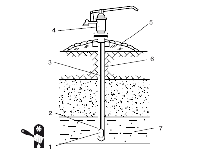
Рис. 1.26.Забивная скважина: 1 – обратный клапан; 2 – сетчатый фильтр; 3 – всасывающая труба; 4 – ручной поршневой насос; 5 – отмостка; 6 – обсадная труба; 7 – водоносный слой
Скважины нуждаются в эффективных фильтрах, устанавливаемых в водоприемной части, которые надежно защищают поступающую к насосу воду от механических примесей. Чаще всего используется дырчатый фильтр без сетки. Он представляет собой стальную перфорированную трубу, в которой в шахматном порядке просверлены круглые отверстия диаметром 1–2 см. Популярностью пользуется щелевой фильтр – он отличается от дырчатого формой отверстий, в нем применяются не круглые, а прямоугольные отверстия размером 2,6 ? 1,5 мм. Часто используется и сетчатый фильтр, который представляет собой перфорированную трубу из нержавеющей стали с опорной латунной проволокой, сверху которой закреплена сетка с отверстиями диаметром 0,1–0,5 мм. Для большей эффективности применяется также и гравийный фильтр: либо гравий засыпается непосредственно в скважину (подобно тому как в шахтных колодцах устраивается гравийная подушка для фильтрации воды), либо в скважину опускается сетчатый фильтр и обсыпается крупным гравием по мере подъема обсадной трубы (Рис. 1.27).
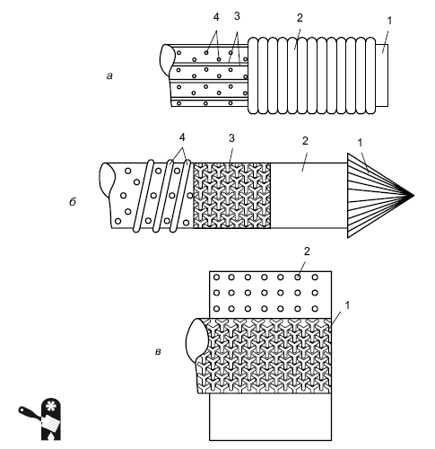
Рис. 1.27.Варианты фильтров для скважины: а – дырчатый фильтр с проволочной обмоткой (1 – труба; 2 – проволочная обмотка; 3 – опорная проволока; 4 – отверстия); б – сетчатый фильтр (1 – наконечник; 2 – труба; 3 – сетка; 4 – проволочная обмотка); в – гравийный фильтр на основе сетчатого (1 – сетка; 2 – гравий)
Абиссинский колодецЕсли водоносный горизонт находится неглубоко, а грунт рыхлый (песок, смесь песка и гальки), возможно сооружение абиссинского трубчатого забивного колодца. Фактически абиссинский колодец представляет собой простейшую скважину, которую можно соорудить самостоятельно.
Для сооружения абиссинского колодца требуется минимум материалов и оборудования: оцинкованная стальная труба (диаметром 25–60 мм) и газовые трубы. Соединенные с помощью резьбы, эти трубы образуют абиссинскую колонну. На нижней ее части располагается стальной конусообразный наконечник – именно этой частью колонна забивается в грунт. Диаметр наконечника немного больше диаметра трубы – труба должна относительно свободно перемещаться внутри скважины. В нижней части трубы должно быть отверстие, закрытое фильтром (в качестве фильтра обычно используется мелкая сетка из нержавеющей стали) (Рис. 1.28).
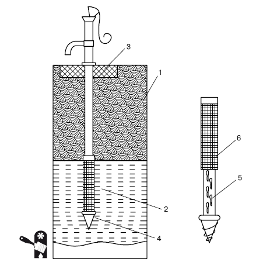
Рис. 1.28.Устройство абиссинского колодца с ручным насосом для подъема воды: 1 – грунт; 2 – водоносный слой грунта; 3 – бетонный цоколь; 4 – наконечник; 5 – труба с отверстиями для поступления воды; 6 – фильтрующая сетка
Для сооружения абиссинского колодца сначала бурится небольшая скважина – диаметром 0,2 м на глубину около 1 м (для бурения такой скважины подходит ручной садовый бур). Затем устанавливается абиссинская колонна (из фильтра и одной трубы), на которой закрепляется баба. Масса бабы – 25–30 кг. В верхней части колонны с помощью болтов укрепляется подбабок (стальной хомут). Расстояние от этого хомута до фильтра – около 1 м. Затем устанавливается второй хомут (с двумя блоками) – на расстоянии около 1–1,5 м от первого.

Примечание
Чтобы абиссинская колонна была устойчива, а забивка производилась строго вертикально, вокруг колонны в скважину насыпается грунт, который уплотняется, чтобы ограничить движение колонны в скважине.
Баба поднимается с помощью веревок, и таким образом происходит забивка абиссинской колонны в грунт (Рис. 1.29).
По мере углубления колонны хомуты двигаются по трубе вверх. Как только первая часть колонны заглублена в грунт, колонна доращивается следующей частью трубы и заглубление продолжается до тех пор, пока не появится вода.
После того как колонна достигает водоносного слоя, воду следует откачивать из колодца до тех пор, пока она полностью не избавится от различных механических примесей.
Абиссинский колодец хорош тем, что его очень просто соорудить – для этого не нужны специалисты, вполне можно справиться своими силами. Еще одним плюсом абиссинского колодца является возможность его демонтажа (демонтировать колодец так же просто, как и установить) и переноса на новое место (к примеру, в том случае, если источник в месте установки колодца иссяк). К недостаткам абиссинского колодца относится невозможность использования погружного насоса (он не соответствует диаметру применяемых труб) – приходится пользоваться ручным.
Еще один минус абиссинского забивного колодца – его относительно небольшая глубина. Обычно такая скважина не превышает по глубине 10 м. Для того чтобы колодец был глубже, необходимо применять специализированное оборудование, и самостоятельно такую работу проделать практически невозможно (не столько из-за сложности оборудования, сколько из-за его отсутствия). Вода же на глубине до 10 м может не соответствовать санитарным нормам для употребления для бытовых нужд. Поэтому чаще всего абиссинские забивные колодцы используются для хозяйственных нужд и полива.
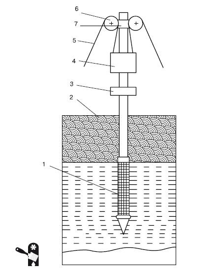
Рис. 1.29.Забивка абиссинского колодца: 1 – сетчатый фильтр; 2 – труба; 3 – первый хомут (подбабок); 4 – баба; 5 – веревка; 6 – блок; 7 – второй хомут
Бурение скважиныДля бурения скважины для сооружения трубчатого колодца требуются специальные инструменты и оборудование, поэтому подобные работы редко выполняются самостоятельно, даже если речь идет о неглубокой скважине на первый водоносный горизонт. Но при желании можно изготовить собственную буровую установку и провести работы своими силами (Рис. 1.30). Один из вариантов такой буровой установки приведен на рисунке ниже. Следует заметить, что подобная буровая установка будет эффективна только в том случае, если в почве нет большого количества камней. Для бурения скважин в каменистой почве требуются профессиональное оборудование и навыки работы с тяжелыми грунтами.
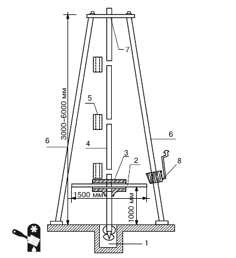
Рис. 1.30.Самодельная буровая установка [6]: 1 – бур; 2 – вороток; 3 – тройник; 4 – штанга; 5 – муфта; 6 – вышка-тренога; 7 – отверстие; 8 – лебедка
В такой самодельной установке используется наращиваемая штанга, что позволяет пробурить отверстие до 8 м. Если глубина водоносного слоя больше, то приходится использовать вышку-треногу (обычно достаточно треноги высотой 3–6 м, но бывает, что приходится использовать и большую).
Перед тем как монтировать и опускать в скважину обсадные трубы, торец первой обсадной трубы заделывается наглухо и перфорируется на высоту до 2 м (в трубе насверливается множество отверстий – для притока воды). Чтобы предотвратить засор отверстий, перфорированная часть трубы оборачивается сеткой (сетчатый фильтр), также можно использовать стеклоткань (Рис. 1.31).
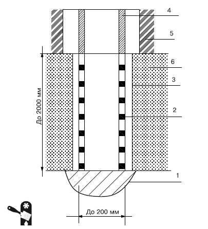
Рис. 1.31.Нижняя обсадная труба скважины: 1 – забивной наконечник; 2 – перфорированная труба; 3 – сетка; 4 – труба; 5 – сухой грунт; 6 – водоносный слой
Когда трубы смонтированы и опущены в скважину, над ними сооружается шатер и устраивается глиняный замок и отмостка (подобно тому как устраивается глиняный замок и отмостка для шахтных колодцев) (Рис. 1.32).
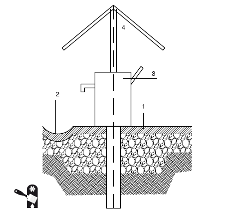
Рис. 1.32.Шатер и глиняный замок с отмосткой для скважины: 1 – отмостка; 2 – отводная канава; 3 – насос; 4 – шатер
Выбор труб для наружного водопроводаСогласно законодательству сооружение наружного водопровода можно осуществлять только при наличии специальной лицензии на проведение данного вида работ. Так что приходится приглашать специалистов, у которых такая лицензия имеется. Но за владельцем участка и дома остается выбор труб для водопровода – весьма важное решение, от которого зависит не только стоимость сооружения наружного водопровода, но и последующие эксплуатационные расходы на водоснабжение дома. При выборе труб следует учитывать такие параметры, как:
? прочность (изнутри на стенки трубы оказывает воздействие давление воды, снаружи – слой грунта, также возможны сезонные подвижки грунта и другие механические воздействия);
? долговечность;
? гладкость внутренних стенок (этот показатель влияет на напор воды в системе водопровода, а также на возможность появления различных отложений на стенках труб, в том числе и загрязняющих воду);
? водонепроницаемость;
? наименьшую подверженность коррозии (данный показатель означает не только долговечность водопроводной системы, но и возможность попадания в воду посторонних и вредных частиц);
? герметичность;
? морозоустойчивость (нередко водопроводная система выходит из строя из-за низкой морозоустойчивости труб, особенно если в трубе образовалась ледяная пробка);
? экономичность.
Труб для наружного водопровода существует множество, но если отбросить различия внутри категорий, то выбор нужно осуществить всего лишь между двумя типами труб: металлическимии пластиковыми. Иногда применяются асбестоцементные водопроводные трубы, которые обладают рядом положительных качеств: они устойчивы к коррозии, имеют небольшую массу (это облегчает монтаж системы), гладкие внутренние стенки. Но асбестоцементные водопроводные трубы не пользуются популярностью и не получили широкого распространения.
Металлические трубы – это и звучит и выглядит солидно. Металлическая труба представляется надежной, не подверженной никаким воздействиям, и кажется, что такой водопровод прослужит столетия, достанется в неприкосновенности и детям и внукам, не придется тратиться ни на ремонт, ни на замену труб, то есть эксплуатационные расходы будут сведены к минимуму.
К сожалению, это заблуждение. Практически все металлические трубы подвержены коррозии. Более того, окисные пленки имеют обыкновение разрастаться, отслаиваться, и окислы попадают в воду, ухудшают ее качество (вам приходилось сталкиваться с «ржавой» водой? Вот это и есть результат коррозии металлических труб), а кроме того, окислы могут попросту забивать трубы, уменьшая их сечение – в результате существенно ухудшается водоснабжение, водопровод, что называется, «не тянет».
Исключение составляют медныетрубы. У медных труб для наружного водопровода множество плюсов: медь практически не подвержена коррозии, имеет естественную защиту в виде окисной пленки, которая, образовавшись один раз, не разрастается и не отслаивается, надежно защищая чистый металл; срок службы медных труб – до 200 лет; медь имеет бактерицидные свойства, и вода в медном водопроводе обеззараживается; медные трубы просты в монтаже. В странах Евросоюза для водопровода предпочитают использовать именно медные трубы – как самые долговечные и экологически безопасные. Но есть и существенный минус: медные трубы очень дороги, и поэтому их применение ограниченно – не каждый домовладелец в состоянии оплатить такой дорогостоящий водопровод, несмотря на все его положительные качества.
Если медные трубы недоступны по финансовым соображениям, а хочется все же металлический водопровод, то приходится выбирать из более экономичных вариантов. Неплохой альтернативой меди является нержавеющая сталь как наиболее коррозионно-стойкий вариант. Но стоимость таких труб, хотя и ниже, чем медных, все же довольно высока, и подобный водопровод устанавливают лишь немногим чаще, чем медный. К сожалению, все остальные варианты металлических труб дают не просто воду, а воду с примесью разнообразных металлических окислов. Или приходится применять дорогостоящие системы фильтрации воды – чтобы задержать мельчайшие частицы ржавчины, поступающие в кран вместе с водой в результате коррозии металлических труб.
Самым бюджетным вариантом из металлических труб являются чугунные. Их плюс – цена и несомненная внешняя солидность. Увы, на внешней солидности дело заканчивается: чугун подвержен коррозии. Мало того, что корродированный металл приобретает такое неприятное свойство, как пористость, так чугун еще изначально отличается повышенной пористостью. И это означает не просто невысокое качество металла, но и повышенную опасность разрушения (например, при промораживании труб – а такое происходит, если дом предназначен для сезонной эксплуатации и внешний водопровод не утеплен; в этом случае вода, проникающая и задерживающаяся в порах, при замерзании расширяется, а в металле появляются микротрещины, которые впоследствии становятся полноценными трещинами) и, как следствие, регулярные аварии на водопроводной линии и перебои с водоснабжением дома. Более того, чугун изначально является весьма хрупким металлом, и он более остальных подвержен разрушению при различных механических воздействиях, в том числе и при сезонных подвижках грунта, и при перепадах температуры.
Пористость металла (в результате коррозии или как естественное строение – как, к примеру, у чугуна) – это не только повышенная опасность разрушения, но еще и повышенное содержание различных отложений: именно в порах удобно размещаются как неорганические, так и органические отложения. Ежегодная санация металлических труб приносит от 0,5 до 15 кг (в зависимости от времени эксплуатации водопровода и металла труб) на погонный метр трубы различных отложений (эти отложения в большинстве своем представляют смесь окислов, колоний железобактерий и кремнезема). Наибольший урожай различных отложений приносят чугунные трубы. Отложения в трубах увеличивают гидравлическое сопротивление и, как следствие, снижают пропускную способность водопровода и повышают энергозатраты. Чем больше отложений, тем дороже эксплуатация водопровода. С этой точки зрения самые бюджетные чугунные трубы являются самыми дорогими в эксплуатации.
У всех металлических труб (кроме медных) есть еще один недостаток: их монтаж требует наличия специального оборудования и материалов. Например, для того, чтобы изогнуть металлическую трубу, необходим станок, который имеется только на производстве. А поскольку водопровод – это не только прямые трубы, но еще и некоторые изгибы трассы, то приходится заказывать, кроме обычных, еще и изогнутые трубы, а это существенно повышает стоимость устройства водопровода.
Еще одним минусом металлических труб является то, что их необходимо защищать от блуждающих токов.
Так что металлические трубы – это отнюдь не надежность, солидность и долговечность, а, напротив, – недолговечность, проблемы с монтажом и последующей эксплуатацией, высокая стоимость эксплуатации, необходимость частого проведения ремонтных работ, низкая ремонтопригодность, а также небезопасность для здоровья (все, что извлекается из металлических труб в процессе санации, в другое время попадает в водопроводную воду, которая используется и для питья). Все эти минусы металлических труб привели к тому, что во многих странах мира уже с 60-х годов прошлого столетия перестали применять металлические трубы для прокладки подземного водопровода. Вместо металла все чаще применяют пластик.
К несомненным плюсам пластиковых труб относится их абсолютная инертность – они не только не подвержены коррозии под воздействием воды, но не корродируют даже под воздействием соляной кислоты. Пластиковые трубы не разрушаются под воздействием бактерий, не покрываются плесенью, в них не появляется грибок, не образуется конденсат (это особенно актуально для морозных зим). Стенки пластиковых труб отличаются абсолютной гладкостью, сохраняющейся на протяжении всего срока эксплуатации, за счет чего снижается гидравлическое сопротивление и увеличивается пропускная способность, и одновременно за счет этого снижаются энергозатраты. К тому же пропускная способность большинства металлических труб со временем снижается даже при регулярном удалении отложений – не все осадки удается удалить, и трубы «зарастают» изнутри известковыми отложениями, а, например, полиэтиленовые трубы (разновидность пластиковых) увеличивают пропускную способность в процессе эксплуатации. Пластиковые трубы в эксплуатации дешевле металлических, к тому же не требуют регулярного удаления отложений – на гладких стенках пластиковых труб ничего не задерживается.
Еще одна особенность пластиковых труб – гибкость. При нагрузках они гнутся, но не ломаются. Это свойство наиболее актуально при возникновении разнонаправленных нагрузок – а именно подобные нагрузки возникают при сезонных просадках грунта, особенно сильны нагрузки в пучинистых грунтах. И несмотря на то, что подземная водопроводная трасса прокладывается ниже глубины промерзания грунта, такие нагрузки приходится учитывать, ведь водопровод должен войти в дом, и именно в этом месте трасса либо выходит на поверхность, либо подходит близко к ней – как раз на уровень промерзания грунта. Металлические трубы жесткие и подобной гибкостью не обладают, поэтому при сильных просадках грунта в случае пучинистых грунтов такие трубы начинают разрушаться – на них появляются трещины.

Примечание
Гибкость пластиковых труб способствовала тому, что в странах с высокой сейсмической активностью в законодательном порядке все металлические трубы подземной прокладки были заменены пластиковыми (к примеру, в Японии полностью отказались от металлических труб для сооружения подземных коммуникаций).
Пластиковые трубы очень просты в монтаже, особенно если сравнивать с металлическими: любые работы с пластиковыми трубами можно выполнить прямо на месте, около дома – изгиб, резку, сварку, склейку, механическое соединение. Не нужно заказывать изогнутые трубы заранее, можно выполнить изгиб прямо на участке, точно такой, как необходимо по плану водопроводной трассы. Это свойство пластиковых труб приятно снижает общую стоимость водопровода.
Дополнительный бонус пластиковых труб: материал, из которого они изготовлены, является диэлектриком, а не проводником, как любой металл, и, следовательно, пластиковый водопровод не требует защиты от блуждающих токов. И это также снижает стоимость водопровода.
И последним – но весьма немаловажным – преимуществом пластиковых труб является цена. Сами по себе пластиковые трубы дешевле даже самых бюджетных металлических труб, да еще добавляется более низкая стоимость монтажа и эксплуатации. В результате разница в стоимости водопровода с применением металлических и пластиковых труб составляет от 30 до 50 % в пользу пластиковых труб. При этом гарантийный срок эксплуатации пластиковых труб составляет 50 лет, и эксплуатационные свойства их остаются неизменными, а у некоторых видов даже улучшаются (как в случае с пропускной способностью полиэтиленовых труб).
Исходя из всех этих соображений, большинство владельцев загородных домов отказываются от устройства водопровода с использованием металлических труб. Исключение составляет линия горячего водоснабжения: для этого используются трубы, изготовленные из оцинкованной стали или термопластика, причем опять же термопластику в последнее время отдается предпочтение. Если же вы настроены на стальные трубы, то рекомендуется выбирать те, которые имеют пластиковое покрытие внутренней поверхности – это защищает стальные трубы от коррозии и сообщает им некоторые положительные свойства пластиковых труб (гладкость внутренних стенок, минимальные потери напора, отсутствие отложений, увеличение пропускной способности и т. д.). К сожалению, если сравнивать такие трубы с пластиковыми, то цена гибрида сталь-пластик не порадует.
Но мало сказать: хочу пластиковые трубы! Нужно еще определиться, какие именно пластиковые из всех имеющихся разновидностей. Ведь рынок предлагает различные варианты: полиэтиленовые трубы, изготовленные из полиэтилена высокого или низкого давления высокой плотности (ПВД или ПНД); полипропиленовые (РР); поливинилхлоридные (ПВХ); из сшитого полиэтилена (РЕХ), полибутиленовые; металлопластиковые (РЕХ-AL-РЕХ).
Из всего пластикового разнообразия для устройства водоснабжения загородного дома рекомендуется применять полиэтиленовые трубы, изготовленные из полиэтилена низкого давления высокой плотности. Такие трубы одинаково пригодны для устройства как наружного, так и внутреннего водопроводов. Из них можно соорудить «летний водопровод» – холодное водоснабжение, полив, напорную и самотечную канализацию. У таких полиэтиленовых труб высокая ударная вязкость при перепадах температуры от +65 до –40?°C, так что за водопровод можно не беспокоиться в любое время года (разве что в районах крайнего севера, где зимой температура бывает и ниже –40?°C). Ну а в климате среднерусской полосы не страшно, даже если внутри такого водопровода замерзнет вода – с трубами ничего не случится, не появятся даже микротрещины, а лед благополучно растает с наступлением весны.
Следует знать, что полиэтиленовые трубы из полиэтилена низкого давления высокой плотности бывают двух видов: напорные«питьевые» и технические. Напорные трубы изготавливаются из первичного полиэтилена, а технические – результат переработки вторичного сырья. Эксплуатационные свойства этих труб различны. Технические трубы предназначены для экранирования проводки, устройства вентиляции внутри здания. Они не рассчитаны на постоянное давление, которое присутствует в водопроводной системе, кроме того, технические трубы не выдерживают воздействие ультрафиолетового излучения, то есть быстро разрушаются под действием солнечных лучей и поэтому непригодны для устройства поливочного водопровода. Но цена их гораздо ниже, чем напорных труб, и именно это соблазняет недальновидных покупателей. К тому же если продавец недобросовестен, то он может уверить неспециалиста, что напорные и технические полиэтиленовые трубы обладают почти одинаковыми эксплуатационными характеристиками, различаясь лишь в мелочах. Зато какая привлекательная цена! Однако «мелочи» в данном случае могут привести к тому, что водопровод придется сооружать дважды.
Внешне напорные и технические полиэтиленовые трубы легко отличить по цвету: технические обычно окрашены в серый цвет, а напорные бывают черными, белыми и синими. Фальсификаторы, которые хотят выдать технические трубы за напорные и, соответственно, продать дороже, перекрашивают их в черный цвет. Поэтому вне зависимости от цвета труб нужно требовать у продавца сертификат о качестве. Помните: он выдается только на напорные трубы, а на технические – нет.
Если вы хотите устроить с помощью полиэтиленовых труб надземный водопровод (например, для поливки участка), то рекомендуется брать для этого трубы черного цвета. Обычно предпочтение отдается белым трубам – они выглядят эстетичнее, участок приобретает нарядный вид. Однако при изготовлении черных труб в качестве присадки используется сажа, и это препятствует разрушению полиэтилена под действием солнечной радиации. Синие и белые трубы подобной защиты не имеют и гораздо менее пригодны для сооружения надземного водопровода.
Для тех, кто не может отказаться от излюбленного стереотипа о металлических трубах как самых прочных и долговечных, рекомендуются трубы из металлопластика. Эти трубы достаточно бюджетны (дороже пластиковых, но существенно дешевле металлических), просты в монтаже, экологически безопасны и не подвержены коррозии – они обладают всеми достоинствами пластиковых труб. Единственный минус труб из металлопластика – соединения. Возможно применение только металлических фитингов, а они, к сожалению, не так коррозионно-устойчивы, как металлопластик.

Примечание
Фитингами называются крепежные части водопровода, которые устанавливаются в местах соединений, разветвлений и поворотов труб.